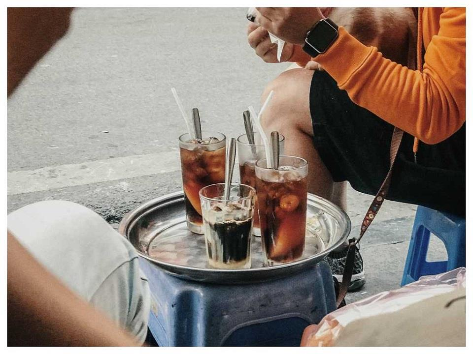
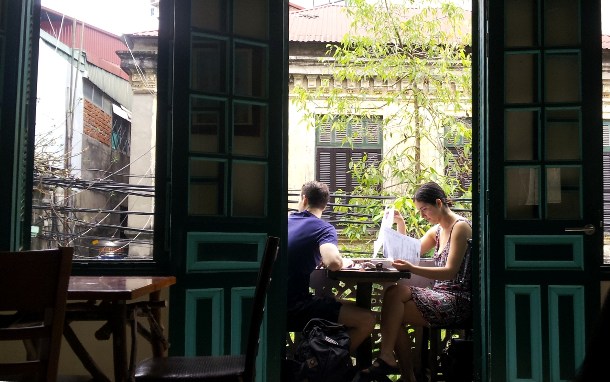

In the song "Remembering Hanoi", musician Hoang Hiep had immortal verses as follows: "Even though I go to all four corners of the sky, my heart still remembers Hanoi..." The lyrics are rustic, simple, but contained. convey the love of so many generations to the capital of a thousand years of civilization. More or less, that land has been deeply imprinted in the subconscious of many people, millions of Vietnamese people. The pace of life in the era of technology 4.0 is inherently bustling, full of worries and chaos, there are still people somewhere with the desire to find the old beauty of a "very different" Hanoi, a peaceful beauty, infatuated with people. Let's explore the old coffee theme with Coffee Shop from the perspective of a passionate drinker.

vietnamese-coffee-culture
Find out about Hanoi Old Quarter - Hanoi 36 streets
"Hanoi 36 streets" slogan people often use that familiar name as another way to call it when talking about Hanoi's old quarter. So many centuries have passed, the ancient Thang Long citadel has "changed its skin", gradually becoming a capital of Hanoi with a modern and developed pace of life but the imprints of a bygone era of the center. The culture of the old city is still present in every row of the old townhouse, the traces of time have a very unique beauty, difficult to be confused with any other land.
Maybe, you have heard a lot about "Hanoi 36 streets" but surely, few people know that each street, each street corner has a very personal meaning, very everyday but very profound. It is no coincidence that people name streets with close names such as Hang Muoi, Hang Cot or Hang Manh... but all these streets are named after the "main occupation" of the people along the neighborhood. That makes it easy to remember, to memorize and to distinguish each time when mentioning the names of those streets, we feel like we can feel the familiar rhythm of life on each small street.

ancient-coffee-address
If you have the opportunity to go through Hang Manh Street, Coffee Shop will be the place for those who love the beauty of traditional coffee. Although in the era of integration, modern coffee has been "introduced" through many ways, but traditional coffee still retains the trust of coffee lovers.
Experiencing the ups and downs of history along with the country's upward development, the old town today has become one of the famous places, attracting a large number of tourists to visit when visiting Hanoi. Huongmai Cafe is still there, since the 1980s, going through many ups and downs, most recently the covid pandemic. However, after those moments of silence, we have reopened and welcomed customers since mid-April. This will be the place for you to feel the breath of the old beauty in our coffee culture of Vietnamese people. In addition to traditional drinks, at the bar, we also have a variety of drinks to suit the tastes and audiences.
.jpg) cafe-shop
cafe-shop
If "Hanoi 36 streets" in the past was known as the land of "thousands of thousands of things", "First Kinh Ky, second Pho Hien", today, Hanoi Old Quarter has a gentle and mixed beauty. Ancient features of mossy tiled roofs. However, there is one thing that cannot be denied that somewhere in that peaceful and quiet beauty, sometimes we will encounter a little imprint of a bustling city in the past. No matter what form, Hanoi is always beautiful and lovely with its unique cultural features.
Located at 15 Hang Manh, Hoan Kiem, Hanoi - where there are quite a few foreign tourists, we are very pleased to serve and bring you the best and best quality coffee beans. Coffee Shop hopes this article is useful and helps you to have a place to enjoy relaxing moments with a cup of coffee.
comemnt